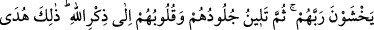
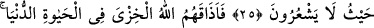
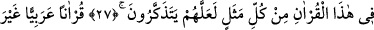
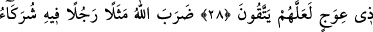

ALLAH SÖZÜN
EN GÜZELİNİ İNDİRDİ
22. Allah kimin gönlünü İslâm’a açmışsa o, Rabbinden bir nûr üzerinde değil
midir? Allah’ı anmak hususunda kalpleri katılaşmış olanlara yazıklar olsun! İşte
bunlar apaçık bir sapıklık içindedirler.
23. Allah sözün en güzelini, birbiriyle uyumlu ve bıkılmadan tekrar tekrar okunan
bir kitap olarak indirdi. Rablerinden korkanların, bu Kitab’ın etkisinden tüyleri
ürperir, derken hem bedenleri ve hem de gönülleri Allah’ın zikrine ısınıp yumuşar.
İşte bu Kitap, Allah’ın, dilediğini kendisiyle doğru yola ilettiği hidayet rehberidir.
Allah kimi de saptırırsa artık ona yol gösteren olmaz.
24. Kıyamet gününde yüzünü azâbın şiddetinden korumaya çalışan kimse
(kendini ondan emin kılan gibi) midir? Zalimlere “Kazandığınızı tadın!” denilir.
25. Onlardan öncekiler (peygamberleri) yalanladılar da farkına varmadıkları bir
yerden onlara azap çattı.